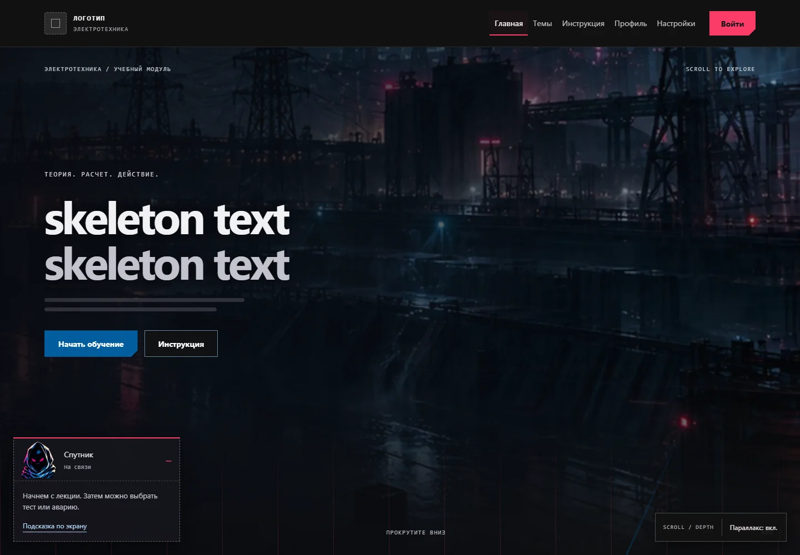
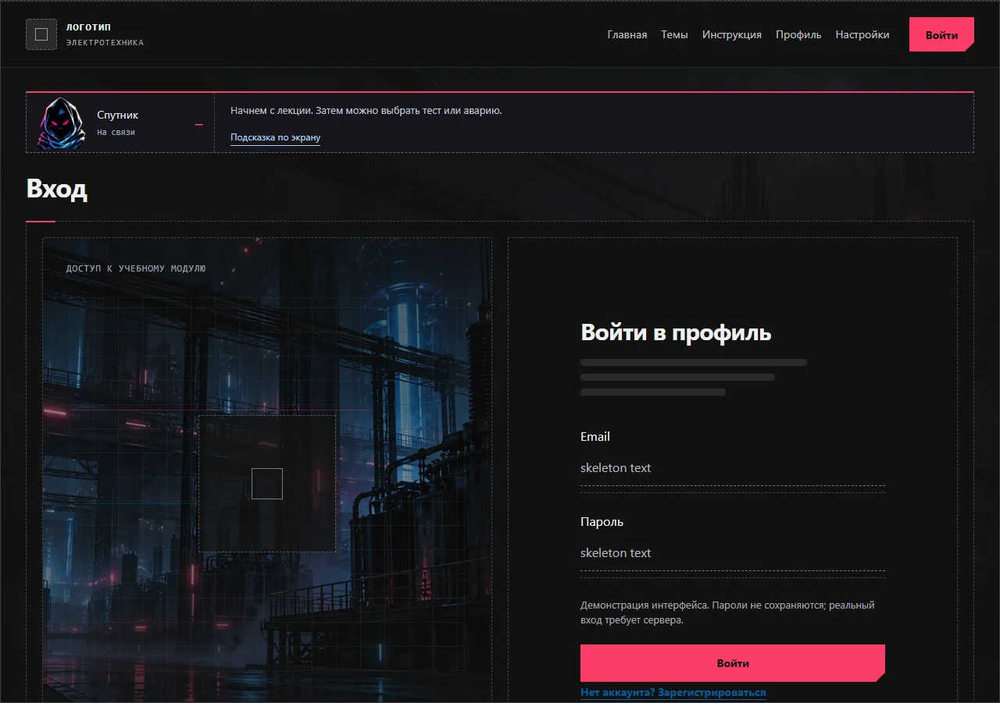
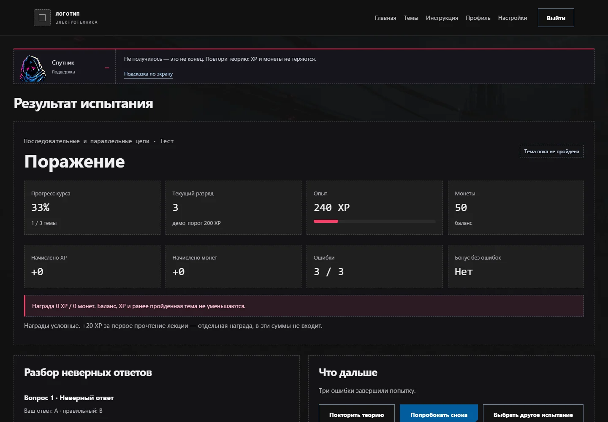
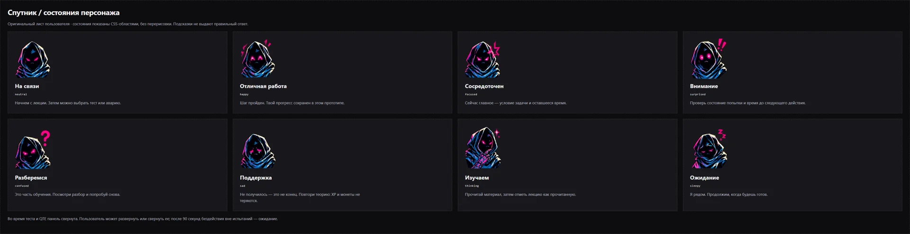

УЧЁБА КАК ИГРА
Киберпанк-интерфейс учебного курса по электротехнике.
Проект ещё дорабатывается. Здесь показаны направление дизайна и промежуточные состояния, включая экраны с рабочими текстами.

Контекст
Учебный модуль по электротехнике в тематике ТПУ. Идея проекта: соединить теорию, проверку знаний и игровые элементы в последовательный учебный сценарий.
Моя роль
Я главный дизайнер проекта. Отвечал за киберпанк-вёрстку, визуальную систему и пользовательский путь. В материалах проработаны состояния интерфейса, маскот и механика игровых испытаний.
Техническая сборка выполнялась с помощью AI-инструментов на основе дизайнерских решений.
Сценарий
- Изучить лекцию и получить базовый опыт.
- Перейти к проверке: тест-босс или сценарное испытание.
- Получить объяснение результата и поддержку маскота.
- Увидеть прогресс и перейти к следующему материалу.
Визуальная система
Cyberpunk и HUD передают инженерный характер предмета. Тёмная основа, яркие акценты и чёткие панели разделяют контент, прогресс и действия.
Внимание уделено ошибкам и поражению: маскот поддерживает студента, а интерфейс предлагает продолжить обучение. Параллакс создаёт глубину; при уменьшении движения композиция остаётся читаемой.
Текущий этап
Визуальное направление и набор экранов уже сформированы. Предстоит завершить содержание, согласовать финальные сценарии и проверить их с пользователями. Рост вовлечённости и учебных результатов пока является целью, а не измеренным эффектом.
Экраны и детали
Материалы проекта: интерфейс, визуальные состояния и атмосфера.



